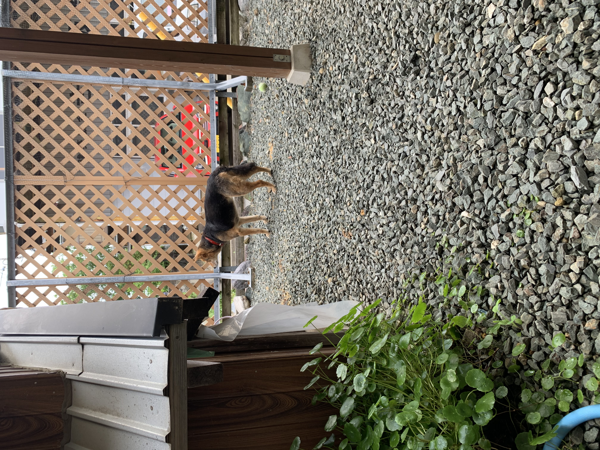

伊藤バラ園とは

愛知県豊橋市にあるバラ農家です。愛知県豊橋市はバラで有名な街です。
現在のお客様は全国各地です。
私たちのバラが、総理大臣の手にいきわたったこともあります。
どうぞよろしくお願いいたします。
愛知県豊橋市にあるバラ農家です。愛知県豊橋市はバラで有名な街です。
現在のお客様は全国各地です。
私たちのバラが、総理大臣の手にいきわたったこともあります。
どうぞよろしくお願いいたします。